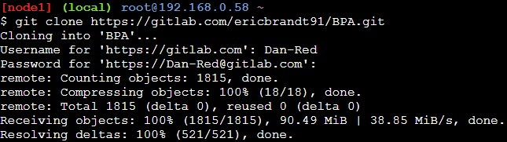
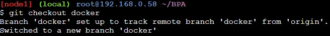

Klonen des Projektes
Geben Sie anschließend folgenden Befehl ein „git clone https://gitlab.com/ericbrandt91/BPA.git“. Sie werden erneut dem Usernamen und Passwort gefragt um anschließend auf das Repository zugreifen zu können.

Benutzen sie jetzt den Befehl „cd BPA/“ um in das BPA Verzeichnis zu gelangen und anschließend den Befehl „git checkout docker“ um auf den Docker Branch zu wechseln.

Start des Projektes
Wechseln Sie nun mit dem Befehl „cd iotlabservices“ in das iot Verzeichnis und starten Sie die Dienste mit dem Befehl „docker-compose up“. Dies dauert wenige Minuten und mit einem Klick auf die oben auftauchenden Ports wie Zum Beispiel „50000“ öffnet sich folgendes Fenster.